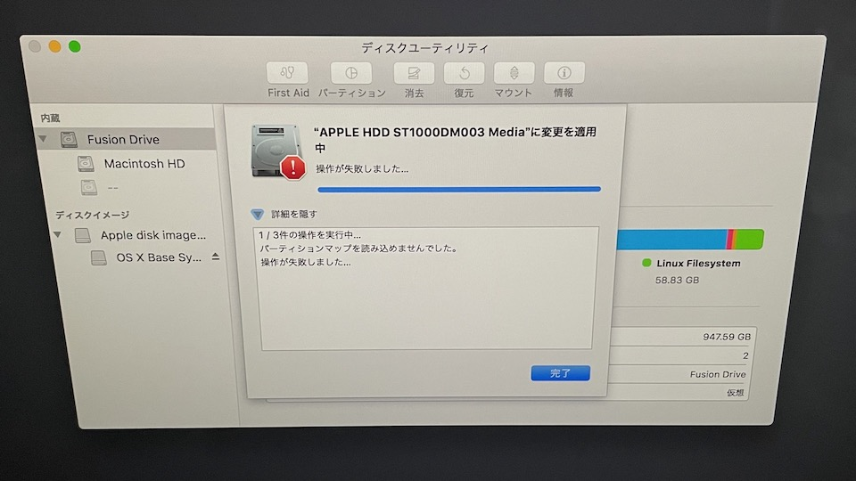
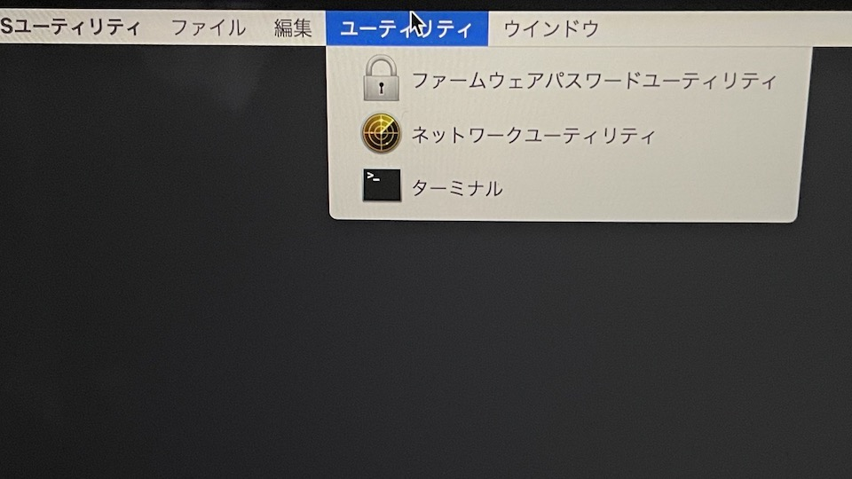
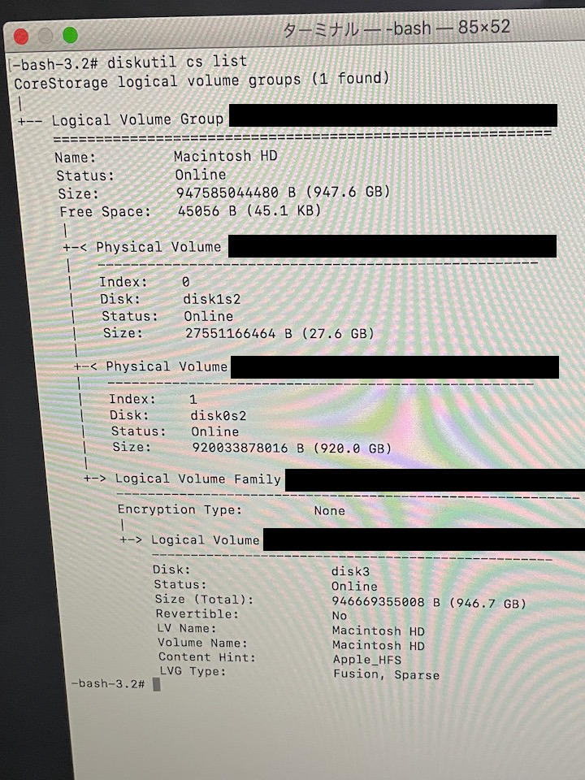
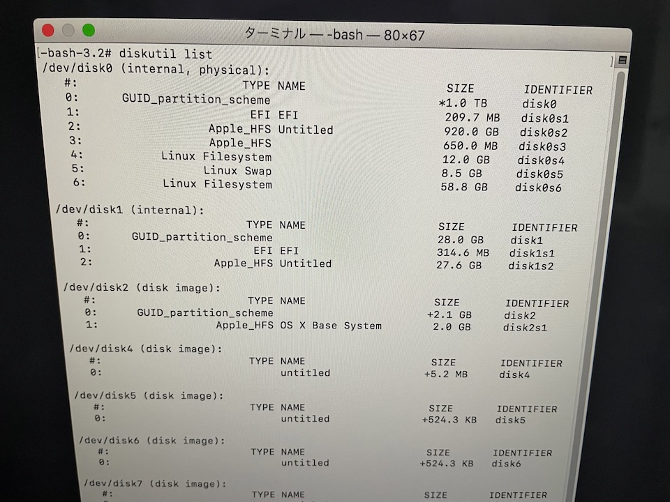
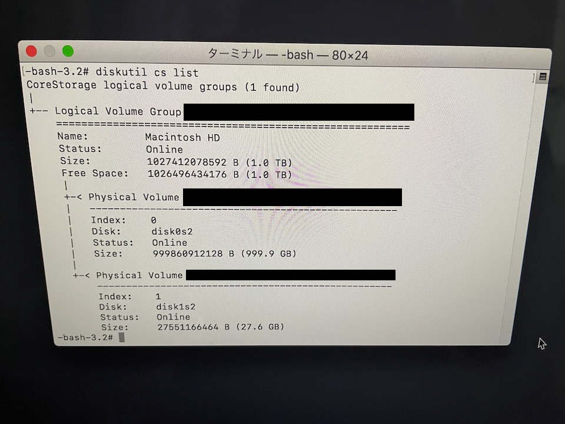
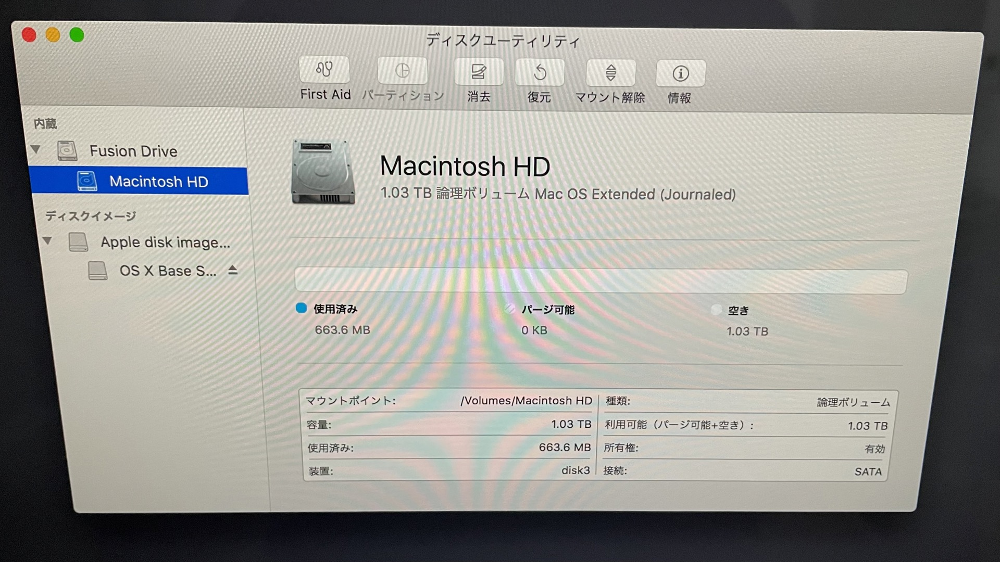

Fusion Drive搭載iMacでパーティションを切っていた場合の初期化手順
iMacのパーティションを切ってLinuxを起動できるようにしていたのですが、Fusion Driveを搭載しているせいで初期化手順がややこしかったです
パーティションの削除に失敗する
パーティションを分割してある状態で初期化する際は、普通だったら以下のような手順になると思います
- cmd+Rを押しっぱなしでiMacを起動
- ディスクユーティリティへ入り、不要なパーティションを削除して１つボリュームだけの状態に戻す
- macOSの再インストール
ただ、Fusion Driveが悪さをしているのか、不要パーティションの削除に失敗してしまいます・・・

ターミナルからFusion Driveを構築し直す
と言うわけで、FusionDriveを構築し直します
ボリュームが消せないのであれば、ボリュームグループごと削除すればいいのです
内容については、基本的にAppleのサポートを参考にしています
https://support.apple.com/ja-jp/HT207584
1.Fusion Driveのボリュームグループを一旦消す
メニューバーのユーティリティからターミナルを起動します

diskutil cs listと入力し、物理ボリュームがぶら下がっているボリュームグループのUUIDを確認します

UUIDを指定してボリュームグループを消します
diskutil cs delete [ボリュームグループのUUID]
2.Fusion Driveのボリュームグループを再構築
diskutil listと入力し、Fusion Driveを構成するストレージのIDENTIFERを確認します
大抵の場合、Fusion DriveのHDD部分はdisk0、SSD部分はdisk1になっていると思います
また、ストレージの容量からもどれがどれか予測がつくと思います
画像の例では、1TBのSSDと28GBのSSDがそれぞれdisk0、disk1となっています
2TBのFusion Drive等の場合はここが変わってくると思います

続けてターミナルで
diskutil cs create Macintosh\ HD disk0 disk1
と入力し、ボリュームグループを再構築します
3. ボリュームを作成
終わりと見せかけてもう一手間あります
(ちなみにこの段階でmacOSのインストールを試みると、インストール先の候補に何も表示されません)
手順1と同様に、diskutil cs listでボリュームグループのUUIDを確認します

UUIDを指定してボリュームを作成します
diskutil cs createVolume [論理ボリュームのUUID] jhfs+ Macintosh\ HD 100%
そして無事に終了することを祈ります
4. 一応ディスクユーティリティで確認
ディスクユーティリティを起動して、
Fusion Driveの配下にMacintosh HDが来るような構成になっていれば成功です

あとはmacOSを再インストールすればOK
お疲れ様でした・・・